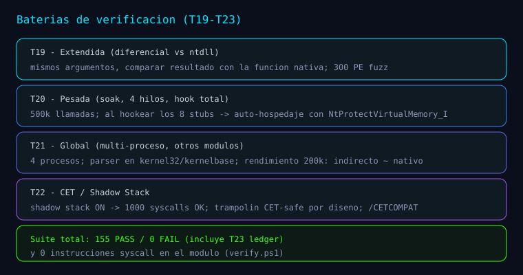
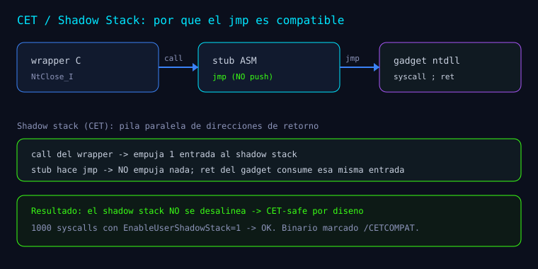

Serie: Kagemusha
Kagemusha — Fase 7 y baterías de verificación (T19–T22): ledger, CLI y CET
Kagemusha — Fase 7 y baterías de verificación (T19–T22): ledger, CLI y CET
Esta entrada documenta la Fase 7 y las baterías de verificación T19–T22 tal como están registradas en el README.md y en los documentos de docs/research/.

T19 — Batería extendida: diferencial contra ntdll
De docs/research/experimentos-extendidos.md (15 experimentos). Incluye pruebas diferenciales: se llama a la función real de ntdll (vía GetProcAddress) y a nuestro wrapper _I con los mismos argumentos, comparando resultados.
| # | Experimento | Resultado |
|---|---|---|
| 1 | FreshyCalls determinista (100 iteraciones) | ✅ mismos 8 SSN |
| 2 | NtQueryInformationProcess_I vs ntdll!NtQueryInformationProcess | ✅ mismo status |
| 3 | PebBaseAddress == valor de ntdll | ✅ |
| 4 | PebBaseAddress == gs:[0x60] (PEB real) | ✅ |
| 5 | NtQuerySystemInformation_I vs ntdll (clase 0) | ✅ mismo status |
| 6 | ReturnLength devuelto (>0) | ✅ |
| 7 | Clase inválida vs ntdll | ✅ 0xC0000003 |
| 8 | NtQuerySystemTime_I vs ntdll (≤1s) | ✅ |
| 9 | NtAllocateVirtualMemory alineada a 64KB y tamaño ≥ 0x1000 | ✅ |
| 10 | NtProtectVirtualMemory → OldProt == PAGE_READWRITE | ✅ |
| 11 | NtClose_I vs ntdll!NtClose (handle válido) | ✅ ambos 0 |
| 12 | Sin fuga de handles (1000 ciclos open/close) | ✅ |
| 13 | Estrés: 20000 NtYieldExecution_I | ✅ consistentes |
| 14 | Hook FF 25 (jmp [rip]) detectado + FreshyCalls inmune | ✅ |
| 15 | Fuzz: 300 PE pseudoaleatorios | ✅ sin crash |
Del mismo documento: los experimentos 2–8 y 11 comparan nuestro resultado con la función nativa de ntdll para los mismos argumentos; y se confirma la preservación de argumentos (PebBaseAddress = 3.º; OldProt = 5.º, puntero de salida; NtAllocateVirtualMemory = 6 args).
T20 — Batería pesada: carga y auto-hospedaje
De docs/research/experimentos-pesados.md (15 experimentos): soak de 500 000 llamadas, catálogo en 4 hilos, integridad de memoria, PE sintético, hook a los 8 stubs y rendimiento.
Hallazgo del documento:
"Al hookear todos los stubs (experimento 8) se descubre que
NtProtectVirtualMemoryes una de las funciones hookeadas, y entoncesVirtualProtect()de la API de Windows se cuelga al pasar por el stub hookeado. Solución elegante: instalar/restaurar los hooks usando nuestro propioNtProtectVirtualMemory_I(que ejecuta por el gadgetsyscall;ret, independiente del stub hookeado). Es decir, el sistema se usa a sí mismo para operar sobre ntdll — demostración práctica de auto-hospedaje."
Del mismo documento: el experimento 7 construye un PE mínimo en memoria (DOS + NT + export directory) y verifica que el parser resuelve y enumera el export; el experimento 4 demuestra que la memoria asignada por nuestro NtAllocateVirtualMemory_I es real y escribible.
T21 — Batería global: multi-proceso, otros módulos y rendimiento
De docs/research/experimentos-globales.md (15 experimentos): 4 procesos hijo, parser en kernel32/kernelbase, gadget y anti-hook sobre toda la tabla Nt*, protección RO/RW, negativos diferenciales y rendimiento vs ntdll.
Hallazgos del documento:
- kernel32 exporta
Nt*: *"1 export no-forwarded con prefijoNt(no es stub de syscall). Los
stubs de syscall viven en ntdll; el parser es genérico y los distingue."*
- Rendimiento: *"la ruta indirecta es prácticamente idéntica a llamar la función nativa de
ntdll"* (200k llamadas: 0.014 s indirecto vs 0.013 s nativo).
- Multi-proceso: *"4 procesos independientes ejecutan el sistema completo con éxito,
confirmando que no hay dependencia de estado entre procesos."*
T22 — CET / Shadow Stack
De docs/research/experimento-cet.md:
| # | Prueba | Resultado |
|---|---|---|
| CET1 | 1000 syscalls bajo la mitigación actual | ✅ |
| CET2 | Hijo con shadow stack ALWAYS_ON → exit 0 | ✅ |
| CET3 | STRICT_MODE | ⚠️ el SO rechaza la creación (ERROR_INVALID_PARAMETER, 87) → no soportado en este entorno |
Del documento: "Estado del proceso: EnableUserShadowStack = 1, Strict = 0. Es decir, el proceso ya corre con shadow stack habilitado, y aun así los 1000 syscalls indirectos funcionan."
Explicación (del mismo documento):
"El
calldel wrapper empuja la dirección de retorno al shadow stack. El stub hacejmp(tail-call): no empuja nada. Elretdel gadget consume exactamente esa entrada del shadow stack → coincide. Resultado: eljmpno desalinea el shadow stack, por lo que la técnica es CET-safe por diseño. El binario además se marca con/CETCOMPAT."
Nota del documento: "STRICT_MODE … no es aplicable vía PROC_THREAD_ATTRIBUTE_MITIGATION_POLICY en esta build (Home). Se documenta como límite del entorno, no del sistema."

Fase 7 — Ledger de syscalls y modos CLI (del README)
Hecho:
- Macro MASM propio
KAGE_STUB name, slot(Fase 5). - Ledger de syscalls (E1) —
src/core/ledger.c: ring buffer (256) con slot, SSN, gadget,
NTSTATUS y timestamp. Deshabilitado por defecto (coste mínimo); thread-safe (interlocked).
- Modos CLI (I2) —
Kagemusha.exe: --dump→ tabla slot / syscall / SSN / gadget.--trace→ ejecuta llamadas y vuelca el ledger.--json→ tabla en JSON.- (sin args) → selftest M0–M5.
Ejemplo --trace (del README):
[INF] [0] NtClose SSN=0x00F gadget=00007FFC48540FA2 status=0xC0000008
[INF] [1] NtQuerySystemInformation SSN=0x036 gadget=00007FFC48541482 status=0x00000000
[INF] [2] NtQueryInformationProcess SSN=0x019 gadget=00007FFC485410E2 status=0x00000000Pendiente: extensión de cdb !kage (I1) para volcar tabla y ledger desde el debugger.
Del README: "T23 (ledger) → 5 checks, parte de los 172 PASS / 0 FAIL."
Endurecimiento (A1/A2) y tests nuevos (T0/T24)
Del README:
- A1 — parser PE: *"se validan las RVAs del export directory contra
SizeOfImage(evita
lecturas OOB con PE malformado) + fuzz con export directory malicioso (G8)."*
- A2 — wrappers: *"guardia de inicialización →
KAGE_STATUS_NOT_INITIALIZED(nuncajmpa
NULL) + test T0."*
- Tests nuevos: T0 (sin init) y T24 (ledger wrap-around, errores del resolver, parser
malicioso, KageSlotName fuera de rango).
Resultados (del README)
- 172 PASS / 0 FAIL ·
Kagemusha_tests.exe(exit 0). (A fecha de esta fase; después, la build dual reporta 178/182.) - Módulo sin
syscall:verify.ps1→ 0 instrucciones. - M4:
NtClose_I(0xDEADBEEF)=0xC0000008,NtClose_I(handle válido)=0x00000000.
Reproducir (del README)
tools\build.cmd
bin\Kagemusha_tests.exe
bin\Kagemusha.exe --dump
bin\Kagemusha.exe --traceCómo sigue la serie
Toda la serie (navegable): Kagemusha.
Bibliografía y referencias
- Fuentes primarias:
README.md,docs/research/experimentos-extendidos.md,
experimentos-pesados.md, experimentos-globales.md, experimento-cet.md, src/core/ledger.c, include/kage/ledger.h.
- Microsoft Learn — Control-flow Enforcement Technology (CET) y Shadow Stack.
- crummie5 — FreshyCalls (
github.com/crummie5/FreshyCalls).
Aprender a romper para poder defender.